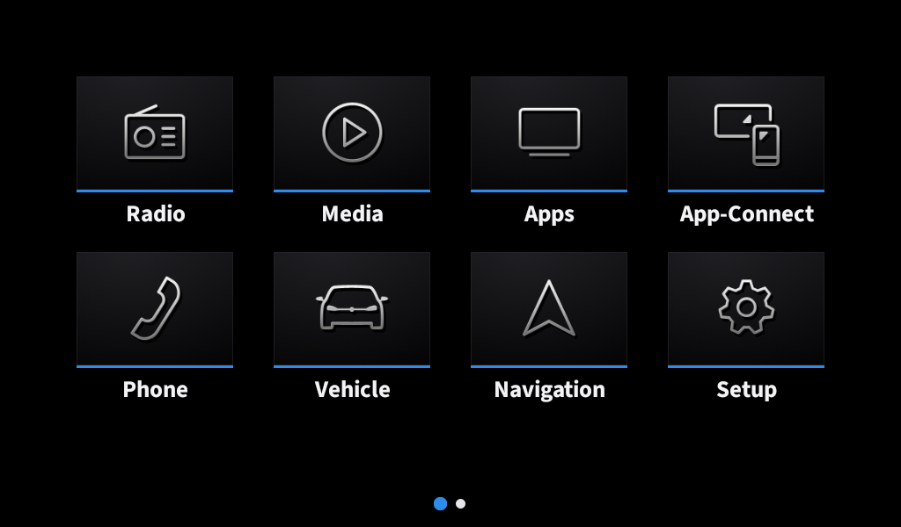
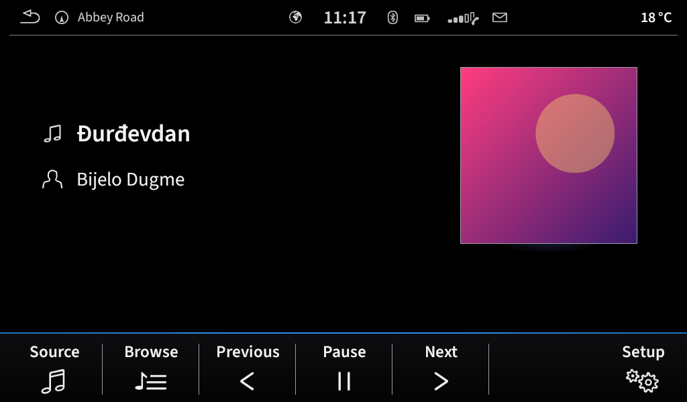
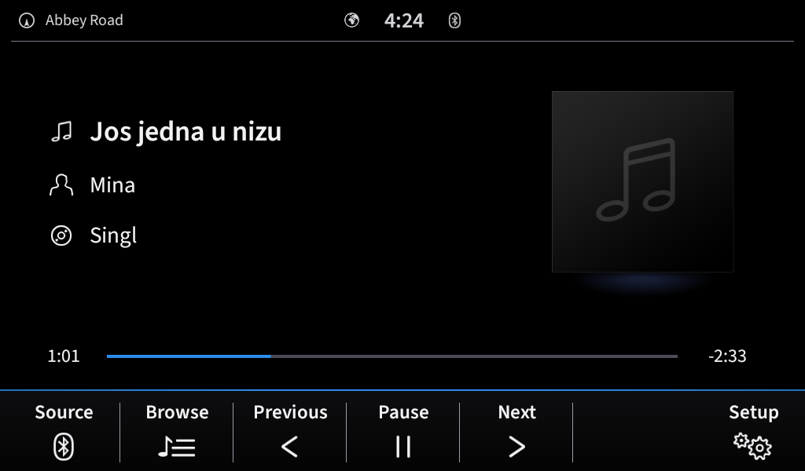
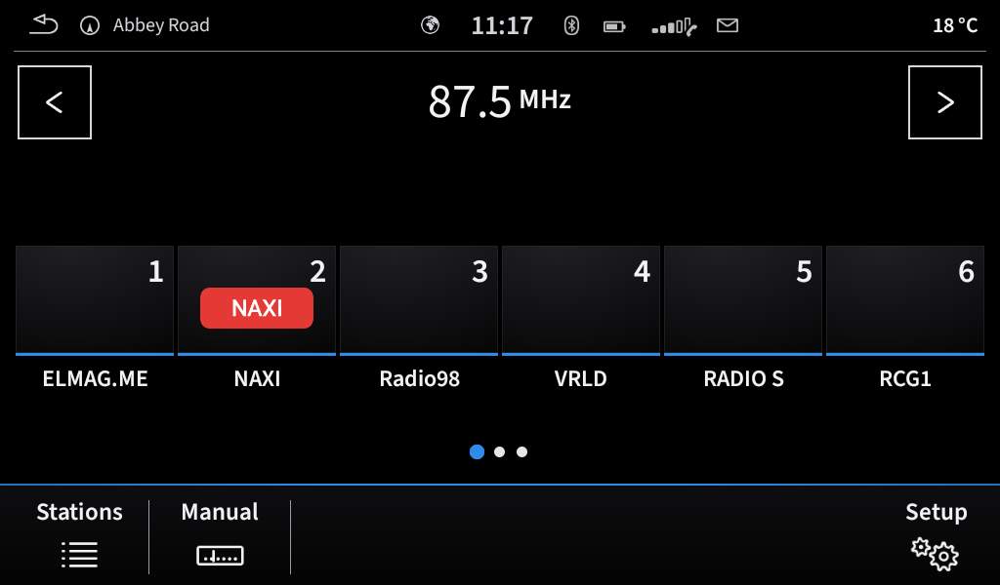
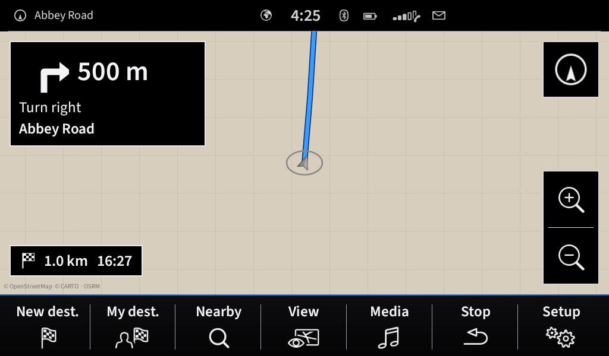
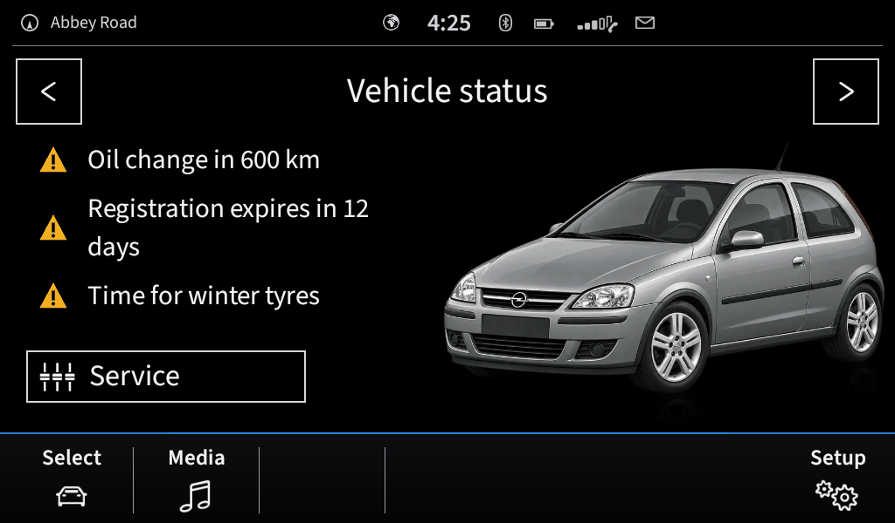
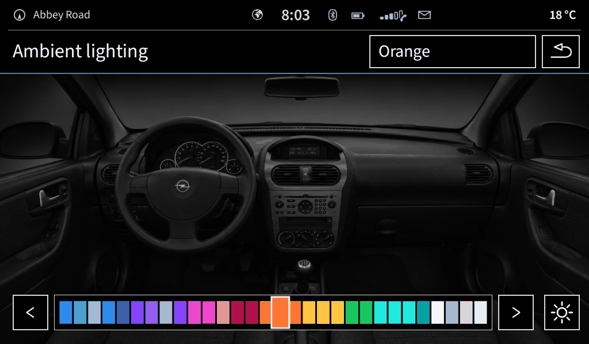
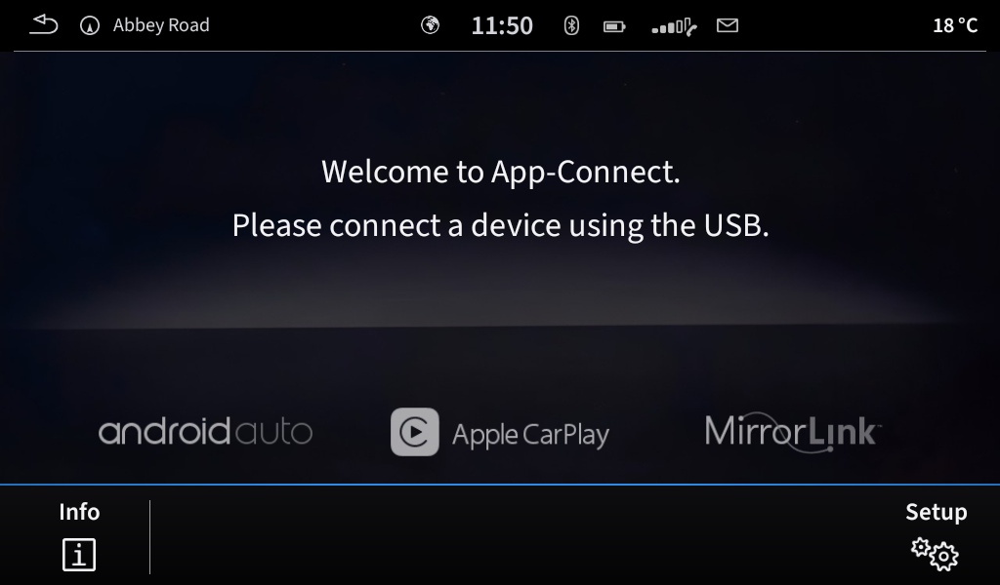

A home-screen launcher for Android head units, styled after a classic factory infotainment system. Radio, Bluetooth music, navigation, App-Connect and your car, on one calm black screen.
Free and open source · Android 5.0 or newer · Serbian, English, Polish, Turkish
One APK for every head unit. Install it, and on first start the setup assistant recognises your unit and installs the version made for it.
MibDroid.apkAny Android head unit · Android 5.0 or newerRecommendedcom.qf.* appsTheCarLauncher.apk
Allwinner T3 / hzbhdcom.hzbhd.* appsTheCarLauncher_hzbhd.apk
android.car firmwareandroid.car.app.* appsTheCarLauncher_carsvc.apk
SYU / FYTMainServer com.syu.msTheCarLauncher_syu.apk
MediaTek MT8163 / hcncom.hcn.* appsTheCarLauncher_hcn.apk
The file names keep the project's old name so installed units keep updating. Every release is on the releases page, with a Magisk module for installing it as a system app.








| Unit | Radio | Bluetooth music | Status |
|---|---|---|---|
| UIS7862S (QF001) | Built-in tuner (MCU) | Song, cover, controls, devices page | In daily use |
| Allwinner T3 / hzbhd | Through hzbhd.radio | nForce service, devices page | Needs testing |
| MediaTek MT8163 / hcn | Factory radio service | hcn Bluetooth music service | Needs testing |
| android.car firmware | Car service | Car service | Needs testing |
| SYU / FYT | MainServer | MainServer | Needs testing |
Another unit? Install MibDroid and run the setup assistant: it sends a device report, and the unit gets its own build when one is made. You can also open an issue with the report from Setup → device report.